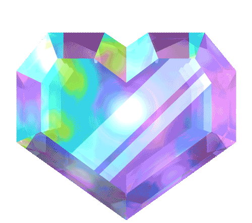

Olá!, seja bem vindo(a) ao meu Portifólio
Designer UX/UI | Front-end | QA Analyst
Formada em Análise e Desenvolvimento de Sistemas, com 4 anos de estudos e prática em análise de requisitos e testes manuais, além de conhecimentos em UI/UX Design e desenvolvimento front-end com HTML, CSS e JavaScript.
Meus Projetos
Sobre mim
Sou formada no Ensino Médio Técnico em Desenvolvimento de Sistemas pela ETEC de Heliópolis. Minhas principais áreas de interesse são o desenvolvimento Front-end, UI/UX Design e Quality Assurance (QA), com foco na análise e garantia da qualidade de sistemas. Também possuo interesse e conhecimentos introdutórios em robótica.
Meu interesse por tecnologia começou ainda na infância, quando desenvolvi uma curiosidade genuína pela arquitetura e pelo funcionamento dos computadores. Na época, porém, meu acesso à tecnologia era limitado aos momentos das aulas de informática, que apresentavam uma abordagem bastante introdutória sobre o tema.
Minha aproximação com a programação aconteceu posteriormente, por meio de uma oficina de desenvolvimento de jogos oferecida pelo Instituto CCA, onde tive meu primeiro contato com o Scratch e com os fundamentos da programação. Essa experiência despertou ainda mais meu interesse pela área e me motivou a conhecer diferentes campos da Tecnologia da Informação.
Em 2023, ingressei no ensino técnico em Desenvolvimento de Sistemas, experiência que me proporcionou acesso a recursos, conhecimentos e projetos que contribuíram para o início da minha trajetória profissional na área de tecnologia.
Atualmente, curso Jogos na FATEC, área que sempre despertou meu interesse e que me permite aprofundar meus conhecimentos em desenvolvimento, tecnologia e criação de experiências interativas.
Neste momento, meus principais objetivos profissionais são ingressar no mercado de tecnologia e desenvolver experiência nas áreas de Front-end, UI/UX Design ou Quality Assurance, contribuindo com meus conhecimentos enquanto continuo aprimorando minhas habilidades técnicas e profissionais.